What are your favorite cuisines?
PERSONALIZE YOUR EXPERIENCE
Vegetarianism is the practice of abstaining from the consumption of meat (red meat, poultry, seafood, and the flesh of any other animal), and may also include abstention from by-products of animal slaughter. Vegetarianism may be adopted for various reasons. Many people object to eating meat out of respect for sentient life. Such ethical motivations have been codified under various religious beliefs, as well as animal rights advocacy. Other motivations for vegetarianism are health-related, political, environmental, cultural, aesthetic, economic, or personal preference. There are variations of the diet as well: an ovo-lacto vegetarian diet includes both eggs and dairy products, an ovo-vegetarian diet includes eggs but not dairy products, and a lacto-vegetarian diet includes dairy products but not eggs. A vegan diet excludes all animal products, including eggs and dairy. Some vegans also avoid other animal products such as beeswax, leather or silk clothing, and goose-fat shoe polish.
 India
India Borscht
Borscht Poland
Poland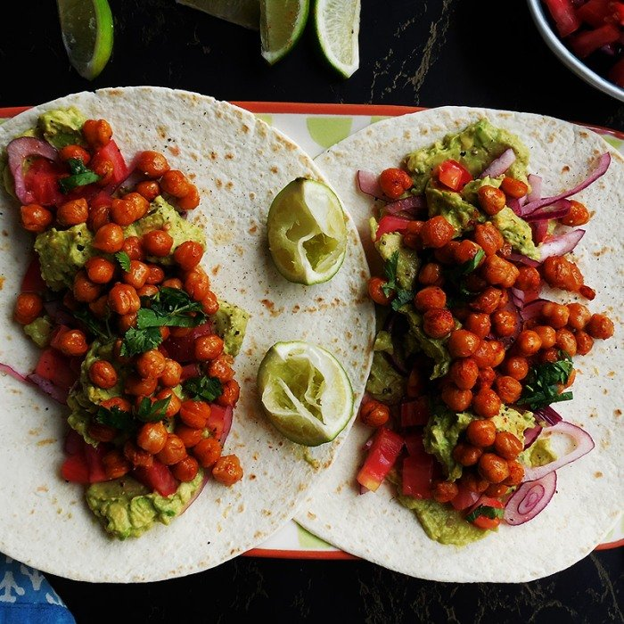
Mexico Greece
Greece India
India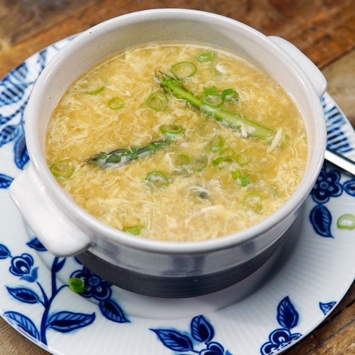
China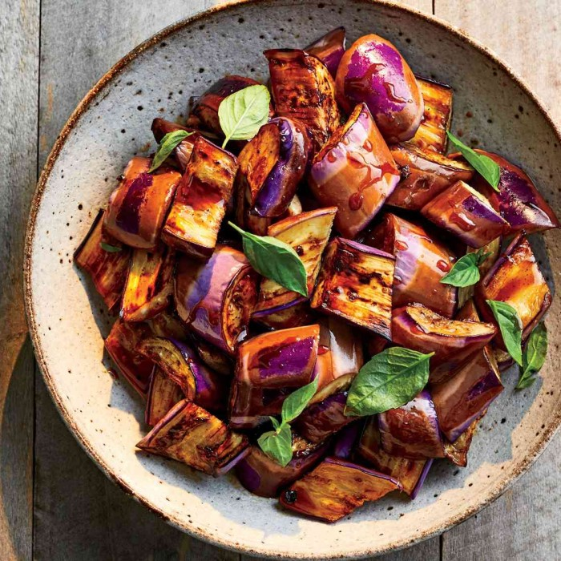
Philippines France
France Egypt
Egypt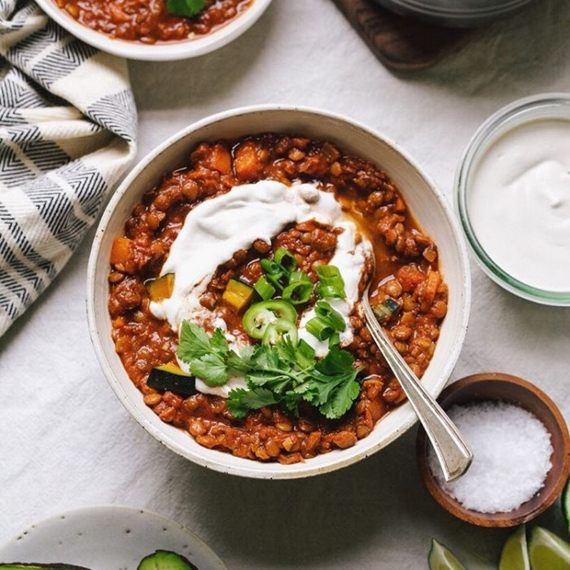
Greece Malaysia
Malaysia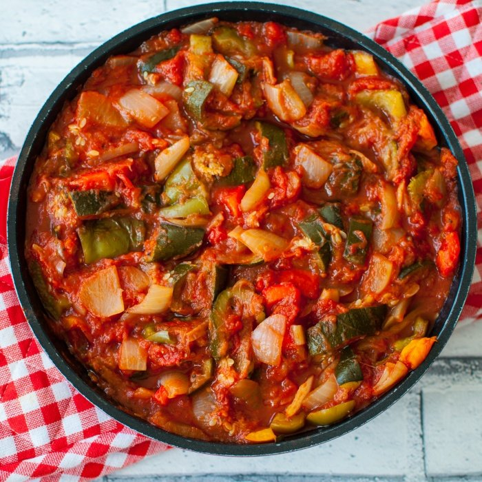
Tunisia India
India Egypt
Egypt Tunisia
Tunisia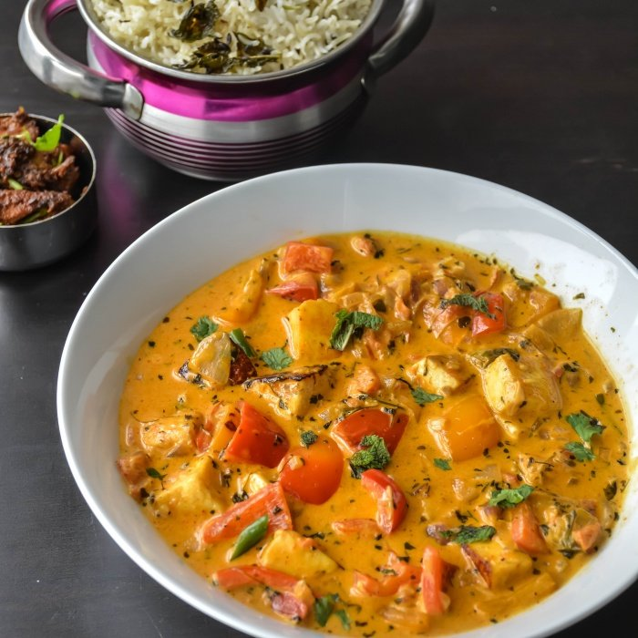
India Morocco
Morocco United Kingdom
United Kingdom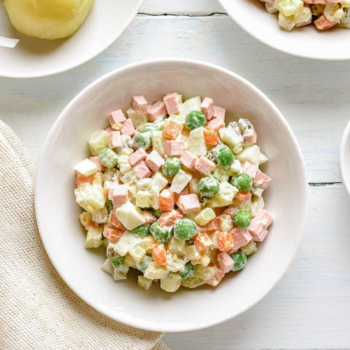
United States France
France Italy
Italy Lebanon
Lebanon Tunisia
Tunisia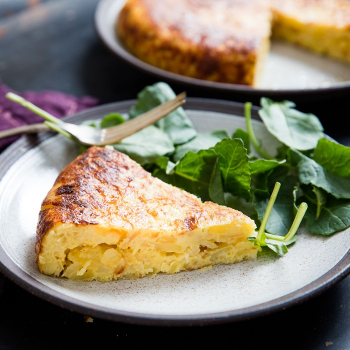
Spain Italy
Italy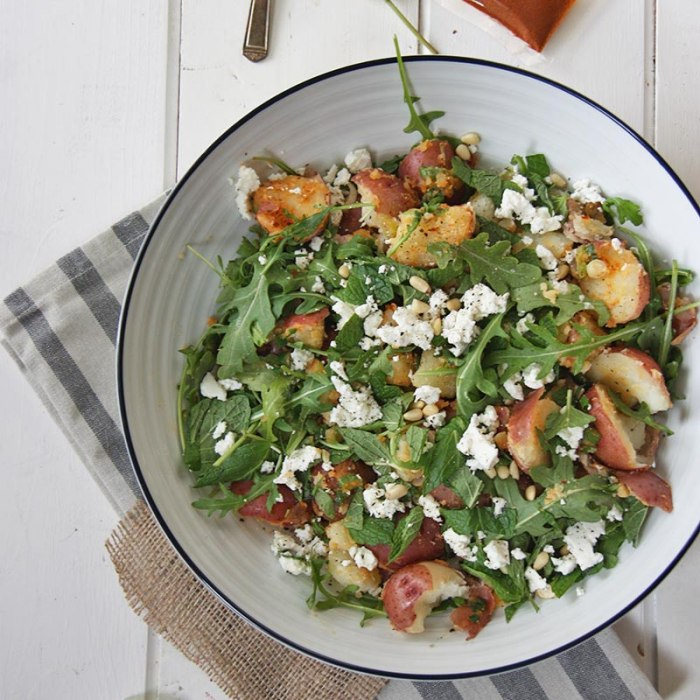
Greece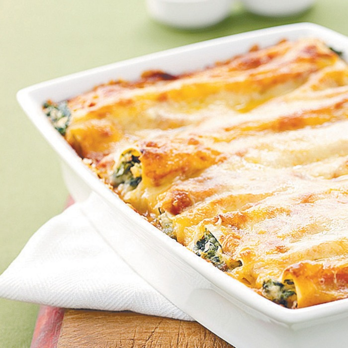
Italy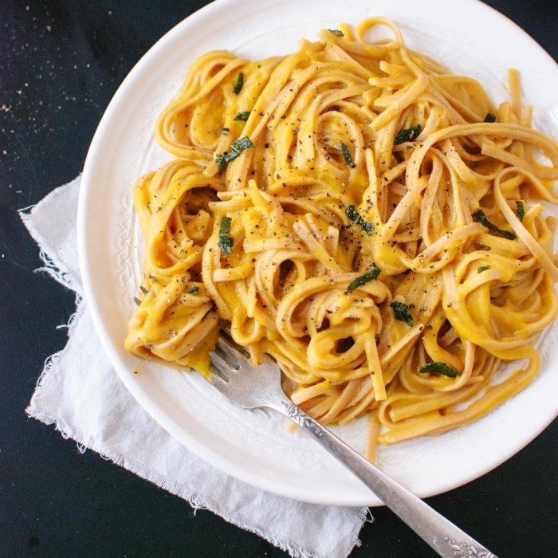
Italy Turkey
Turkey France
France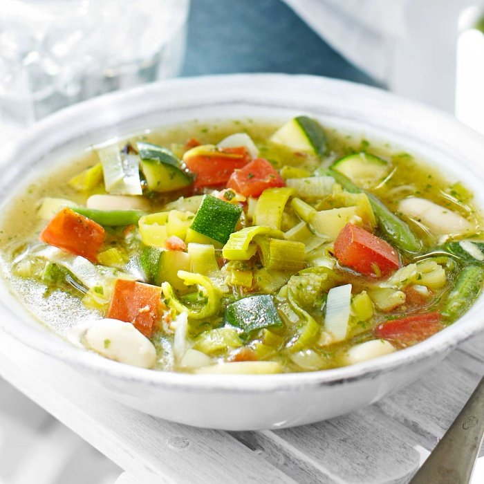
India Egypt
Egypt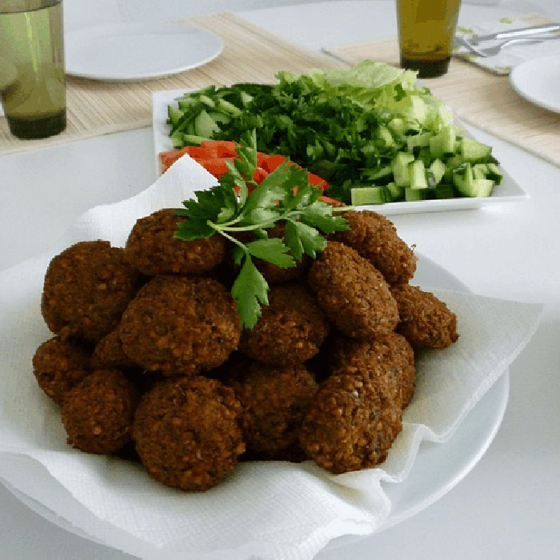
France United Kingdom
United Kingdom United States
United States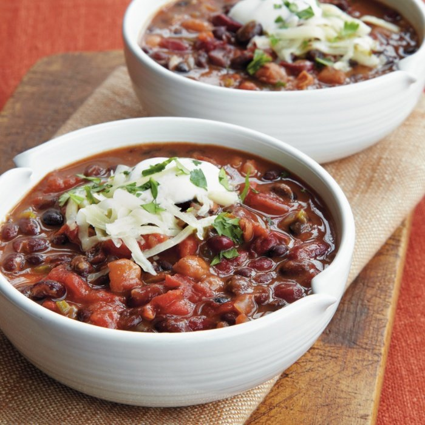
Japan Italy
Italy
Ratatouille is a vegetarian dish from France.